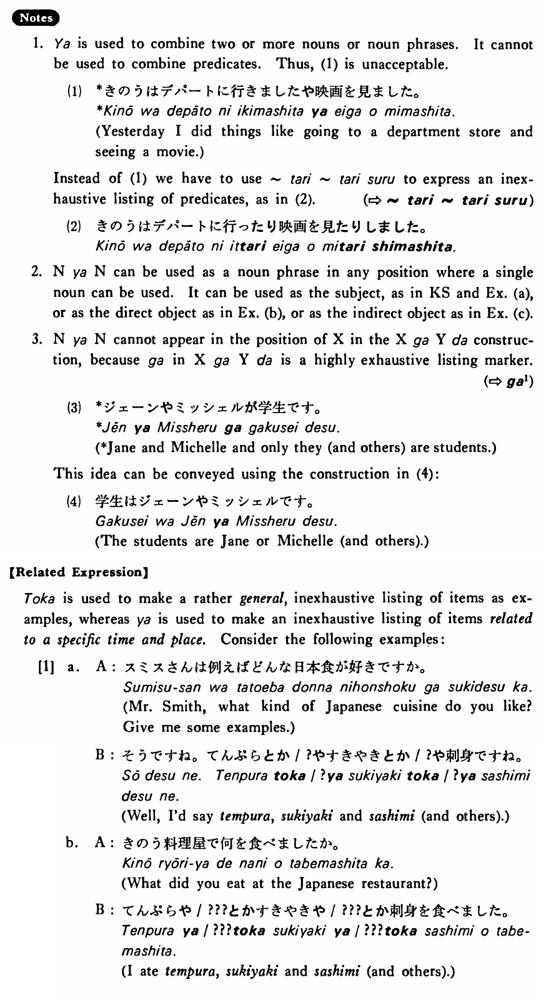

- (ks).
- 山田さんや小川さんが来た・来ました。
- Mr. Yamada and Mr. Ogawa (and others) came.
- (a).
- 山本さんやスミスさんがテニスをしている。
- Mr. Yamamoto, Mr. Smith and others are playing tennis.
- (b).
- 僕はビールやワインを飲んだ。
- I drank beer, wine and other things like that.
- (c).
- 土田さんは大川さんや鈴木さんに手紙を書いた。
- Mr. Tsuchida wrote a letter to Mr. Okawa and Mr. Suzuki (and others).
